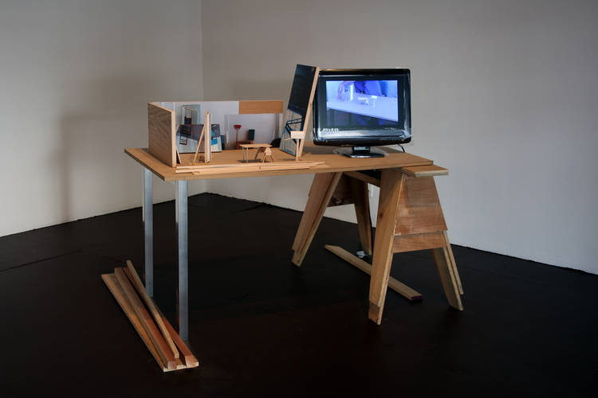
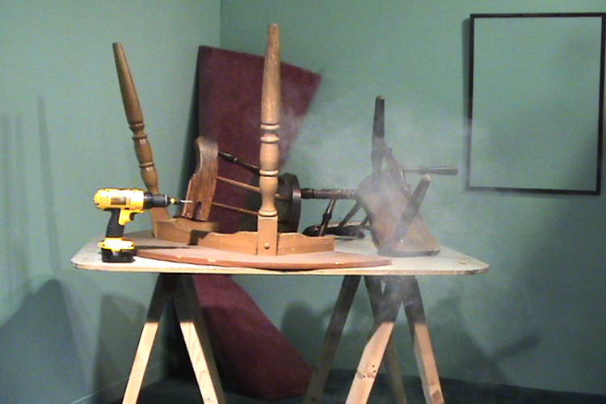

Goods Carrier (2012)
Mixed-media installation with HD video projection, sound, and sculptural elements with mechanized movement. Dimensions variable.
Total running time for video plus movement 21 minutes.
Performers: Namit Das, Neesha Jhaveri, Anahita Uberoi, Kavita Srinivasan and Billy Wright
Director of Photography: Keshav Prakash
Co-producer: Yasmine Stafford
Installation view Hammer Museum, Los Angeles

Stage Design for Disassociation (2011)
Mixed-media installation with HD video on flat-screen monitor and four-channel sound, dimensions variable.
TRT 13:00
Performers: Cynthia Bond and Patricia Scanlon
Violent Broadcast (2010)
Single-channel high-definition video projection onto custom screen with sound
TRT: 8:00
Performers: Cynthia Bond, Mark Damon Espinoza, and Billy Wright
Photo by Kelly Barrie
Back to topThought Composition with Model of the World (2010)
Mixed-media sculpture with high-definition video on flat-screen monitor with four-channel sound, dimensions variable
TRT: 8:35
Performers: Vishal Jugdeo and Billy Wright
Square Configuration (Decorum) Study (2009)
Mixed-media installation with high-definition video projection with sound, dimensions variable
TRT: 7:40
(May be exhibited as single-channel projection)
Performers: Cynthia Bond and Billy Wright

Surplus Room (2008)
Mixed-media installation with high-definition projection and three-channel sound
Dimensions variable
TRT: 8:00
Performers: Joe Reynolds and Billy Wright
Sleepy Talk Episode (2009)
Site-specific installation at the Bonaventure Hotel, Los Angeles
HD video on monitor and rented theatrical props, overall dimensions variable.
Total running time: 3:57
Model in the Studio with Model of the Studio (2008)
Sculpture with video on monitor
Total running time: 6:10

Back to topThree Approximations of the Space Between Two (2006)
Video for projection with sound
Total running time: 4:48
Grad Kit (2007)

Object and Event / Object and Vent (2005)
Two-channel video with sound
Total running time: 3:20
Performers: Aram Moshayedi and Vishal Jugdeo
Camera: Aram Moshayedi and Vishal Jugdeo
Sorry Window (2006)
Crescent Stage (2011)
The Caretaker and His Moon (2009)
Object for a Triangular Situation (2010)

Two Scenarios D-I-Y Version (2005)
Mixed-media installation with video displayed on camcorder

Back to top